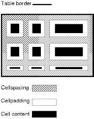
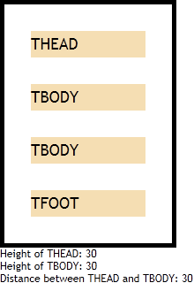
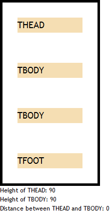

根据 HTML4.01 规范中的描述，TABLE 元素的 cellspacing
属性指定了用户端需要为表格左边界与最左的列、表格上边界与最上的行、表格右边界与最右的列、表格下边界与最下的行以及表格单元格之间的空白间隙距离。如下图：

根据 CSS2.1 规范中的描述，在分离的边框模型 (The separated borders model, 'border-collapse:separate') 中，'border-spacing'
特性指定了毗邻的分离单元格边框之间的距离。其值的格式为 <length>
<length>?，即若仅指定了一个值，则水平与垂直方向的间隙均为该值；若指定了两个值，则第一个值为水平方向间隙，第二个值为垂直方向间隙。长度不允许为负数。表格边框与处在表格边缘的单元格边框之间的距离为表格该边的 padding 加上其相应的 'border-spacing' 的距离。例如在表格最后边，这个距离为 'padding-right' + 水平 'border-spacing'。
从 HTML 与 CSS 规范的描述看，'border-spacing' 特性可以代替 cellspacing 属性。
关于 cellspacing 属性的更多信息，请参考 HTML4.01 规范 11.3.3 Cell margins 中的内容。
关于 'border-spacing' 特性的更多信息，请参考 CSS2.1 规范 17.6.1 The separated borders model 中的内容。
在 Chrome Safari 中，若表格设定了 cellspacing 属性或者 'border-spacing' 特性，则由于设定的单元格上下间隙会作用在 THEAD、TBODY、TFOOT 元素内部，会导致这些元素之间会出现双倍的间隙。
此问题会造成表格内的单元格间隙与设定值不符，影响到表格的高度计算值。
| Chrome Safari |
|---|
阅读前请注意，本问题分离的边框模型 (The separated borders model, 'border-collapse:separate') 中发生，并依据这个模型描述问题。
除 IE6 IE7 IE8(Q)1，其他被测浏览器均支持 'border-spacing' 特性，且为表格设定 cellspacing 特性后，浏览器均会将其值转换为 'border-spacing' 特性的值。为了达到一致的效果，本文仅列举设定 cellspacing 属性的情况，'border-spacing' 特性经测试，在 Chrome Safari 中的情况与 cellspacing 属性相同。
注 1: 关于 IE6 IE7 IE8(Q) 不支持 'border-spacing' 特性，请参考相关问题中的文章。
分析以下代码：cellspacing_tbody.html
<!DOCTYPE html> <html> <head> <style> * { margin:0; padding:0; font:18px
'Trebuchet MS'; } td { background:wheat; height:30px; } div { font-size:12px; } </style>
<script> function $(id) { return document.getElementById(id); } window.onload = function () {
$('info1').innerHTML += $('thead').offsetHeight; $('info2').innerHTML += $('tbody').offsetHeight;
$('info3').innerHTML += $('tbody').getBoundingClientRect().top -
$('thead').getBoundingClientRect().bottom; } </script> </head> <body> <table
cellspacing="30" style="width:200px; border:5px solid black;"> <thead
id="thead"> <tr> <td>THEAD</td> </tr> </thead> <tbody
id="tbody"> <tr> <td>TBODY</td> </tr> </tbody> <tbody>
<tr> <td>TBODY</td> </tr> </tbody> <tfoot> <tr>
<td>TFOOT</td> </tr> </tfoot> </table> <div
id="info1">Height of THEAD: </div> <div id="info2">Height of TBODY:
</div> <div id="info3">Distance between THEAD and TBODY: </div>
</body> </html>
上面代码中表格内包含了 THEAD、TBODY、TFOOT 元素，并设定了 cellspacing 属性值为 30，即单元格间隙为 30px。通过脚本检测 THEAD、TBODY 元素的高度以及它们之间的绝对距离。
在各浏览器中的运行效果如下：
| IE6 IE7 IE8 Firefox Opera | Chrome Safari |
|---|---|
|  |  |
可见，
CSS 规范并没有明确说明单元格间隙的作用位置以及行组元素对其的影响，所以为了避免差异应避免在包含 THEAD、TBODY、TFOOT 这类行组元素的表格内设定非 0 的单元格间隙 (cellsping 属性或 'border-spacing' 特性)。
| 操作系统版本: | Windows 7 Ultimate build 7600 |
|---|---|
| 浏览器版本: |
IE6
IE7 IE8 Firefox 3.6.10 Chrome 8.0.552.0 dev Safari 5.0.2 Opera 10.63 |
| 测试页面: | cellspacing_tbody.html |
| 本文更新时间: | 2010-10-15 |
TABLE cell cellspacing border-spacing spacing TD 行组 表格 间隙 TBODY TFOOT THEAD